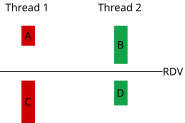

20 - Semáforos¶
Nas últimas aulas aprendemos as APIs da biblioteca pthread para criar e esperar a finalização de threads. Também aprendemos a passar argumentos e receber de volta valores usando um struct alocado dinamicamente.
Usamos mutex quando precisamos criar regiões de exclusão mútua onde somente uma thread pode entrar por vez. Esta restrição é muito forte e não contempla outro caso muito comum em programação concorrente: sincronização de threads. Ou seja, o objetivo não é proteger o acesso a dados compartilhados, mas sim impor restrições no progresso das threads de maneira que elas estejam sempre em uma situação válida. Para isto trabalharemos com semáforos, que são um mecanismo de sincronização mais sofisticado e em geral usado para que threads sincronizem seu progresso e possam executar em paralelo.
Definição: duas tarefas podem ser feitas em paralelo se
- elas não compartilham absolutamente nenhuma informação.
- elas compartilham informação mas possuem mecanismos de sincronização de tal maneira que toda ordem de execução possível de suas instruções resulte no mesmo resultado final.
Semáforos ajudam a criar programas no segundo caso. Nesta aula iremos olhar o caso mais simples de sincronização: duas threads combinam de só progredirem quando chegarem em um certo ponto do programa.
Rendez-vous¶
A expressão Rendez-vous significa, literalmente, encontro em francês. Ela é usada para marcar um horário para duas ou mais pessoas se encontrarem. No contexto de sincronização de tarefas, ele também é usado para nomear o problema de sincronização mais simples: duas threads rodando funções distintas precisam se sincronizar no meio de suas funções.

As partes A e B podem ser feitas em qualquer ordem, mas ambas obrigatoriamente devem ocorrer antes de iniciar a execução de C e D. Note que C e D também podem ser feitas em qualquer ordem.
Warning
Quando dizemos que duas tarefas podem ser feitas em qualquer ordem não quer dizer que elas possam ser feitas em paralelo! Apenas estamos dizendo que A inteira pode ocorrer antes ou depois de B inteira e os resultados serão os mesmos.
Exercise
Quais das ordens de execução das partes A, B, C e D são válidas, segundo o RDV?
- A C B D
- A B C D
- B D A C
Resposta
O RDV separa a execução de A e B de C e D. Ou seja, A B C D é um resultado possível!
Exercise
Quais das ordens de execução das partes A, B, C e D são válidas, segundo o RDV?
- B A D C
- A D B C
- B C A D
Resposta
O RDV separa a execução de A e B de C e D. Ou seja, B A D C é um resultado possível!
Exercise
Quais das ordens de execução das partes A, B, C e D são válidas, segundo o RDV?
- A B D C
- B D A C
- B C A D
Resposta
Vamos listar todos os resultados válidos/possívels: ABCD, ABDC, BACD ou BADC. Sempre A ou B antes de Cou D!
Vamos fazer a solução do RDV no papel primeiro.
Exercise
Preencha aqui quantos semáforos serão usados, seus nomes e valores iniciais.
Resposta
Vamos criar dois semáforos s1 e s2, inicializados na main com valor zero. Como as threads recebem apenas um argumento, seria uma boa criar uma struct para passar a referência dos semáforos.
Exercise
Indique onde você usaria seus semáforos para resolver o RDV.
Resposta
O semáforo s1 será útil para indicar que a thread1 chegou no RDV. Já o semáforo s2 será utilizado para indicar que a thread2 chegou no RDV.
Assim, utilizaremos os semáforos entre os dois printf em cada função das threads.
Semáforos POSIX¶
Existem, basicamente, dois tipos de semáforos:
- named semaphores recebem um nome globalmente único no sistema. Dois processos podem operar neste semáforo identificando o semáforo a ser usado via esse nome.
- unnamed semaphores são colocados na região de memória do processo que o criou. Em geral são usados por threads de um mesmo processo.
Como estamos usando threads, estamos interessados em unnamed semaphores. Use a página sem_overview do manual para responder as perguntas abaixo.
Exercise
Quais funções podemos usar para criar, destruir e operar unnamed semaphore?
Resposta
sem_init, sem_destroy, sem_post e sem_wait.
Example
Implemente (do zero) um programa que cria duas threads e as sincroniza usando RDV. Ambas deverão fazer um printf qualquer antes e um depois do ponto de encontro. Use a imagem do começo da aula como guia.
Barreiras¶
Se até aqui foi tranquilo, vamos misturar as duas aulas? Uma barreira é a generalização do Rendez-vous, em que N threads rodando o mesmo código precisam esperar umas pelas outras para continuar.
Nesta tarefa, você deve lançar quatro threads e utilizar uma barreira para sincronizar as threads, de modo que elas esperem todas terem chegado na barreira para liberar a impressão de qualquer printf("Depois da barreira\n");. Veja o arquivo barrier.c no repositório da disciplina.
Atenção!
Não altere os printf, eles representam uma tarefa a ser executada. Faça a implementação da barreira sem alterá-los, nem adicione novos.
Vamos implementar nossa barreira usando a seguinte estratégia:
- uma variável compartilhada
num_barrierirá contar quantas threads já chegaram e estão esperando na barreira. - um semáforo
sem_barrierservirá para "travar" as threads na barreira.
Exercise
Dadas as variáveis acima, precisaríamos usar um mutex_t?
- SIM
- NÂO
Resposta
A variável compartilhada num_barrier precisa ser protegida por um mutex para ser acessada simultâneamente.
Seguiremos o seguinte algoritmo:
- Quando uma thread chega na barreira ela verifica se é a última:
- se não for, ela soma 1 em
num_barriere esperasem_barrier. - se se ela for a última, ela irá liberar todas as outras usando
sem_barrier.
- se não for, ela soma 1 em
Exercise
A última thread deverá executar sem_post quantas vezes em sem_barrier para liberar todas as threads que estão esperando?
- 1
- 4
-
N - 1: ondeNé o número de threads criadas
Resposta
Cada sem_post libera exatamente uma thread que estava bloqueada no sem_wait. Como teremos N - 1 bloqueadas, basta uma (=1) thread realizar N - 1 chamadas de sem_post para liberar cada uma das threads bloqueadas.
Example
Implemente as ideias acima no arquivo barrier.c.